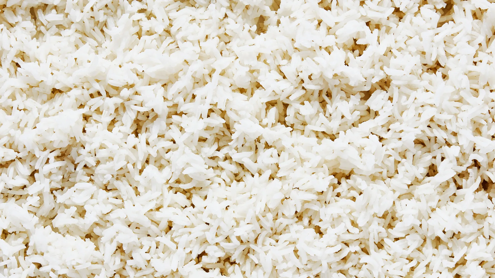

Instant Pot Rice

Rice that will change your life!
Ingredients
Directions
- Rinse rice until water runs clear
- Heat oil in Instant Pot
- Toast rice for about a minute
- Add water and salt
- Cook at high pressure for 6 mins, slow release for 10
- Fluff
- Enjoy!